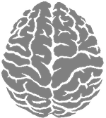

Brain Metrix
| Brain Exercices | Memory Game | Reflex test | Free Chess Game | IQ Test | Concentration Game | IQ Scale |
Brain Metrix is an educational website dedicated to brain training programs; you can achieve optimum fitness by visiting your gym,
and engaging in a brain fitness program that is both fun and stimulating. Here you stretch and train your brain to the limit, you can train and test your memory
or test your reflexes or even your brain creativity and improve it and much more. Just check the menu on the left for a full list of our brain training games and
activities which are all loads of fun.
You will find some brain fitness workouts that can help your mind process information more quickly,
and more efficiently, as well as the ability to perform multiple tasks at the same time. You can get help to concentrate more and increase your brain reflection speed;
you will find simple but very effective brain training games and exercises like solving math problems to achieve greater mind fitness. You may be the smartest person in
the world and you don't even know it. If you're not the most intelligent person in the world yet, then, welcome to your gym!
Included you will find some famous brainteasers, and puzzles that are fun and good for brain stretching exercise. Below is a
list of all our brain exercises described in more detail:
Spatial intelligence is the ability to comprehend three-dimensional images and shapes. This is a primary function of the right side of the brain and is used when solving puzzles, figuring out maps and taking part in any type of construction or engineering project.
While spatial intelligence usually involves vision it also incorporates abstract and analytical abilities that go beyond merely seeing images. Recognizing the image, knowing its relationship to other surrounding objects and displaying the organizational structure of a thought are all involved in spatial intelligence.
Spatial intelligence is also referred to as “visual thinking”. A good example of visual thinking is when someone is hiking and has a compass and map. Though there is no physical path laid out the hiker will use the tools to visualize a mental path using the maps and compass to derive the best route through woods.
Spatial intelligence skills are essential for mastering a game such as chess or for commanding troops on a battlefield. When you play chess you have to use strategy and skill in not only planning your moves but anticipating what moves your opponent will make. This is where spatial intelligence comes in because this type of brain exercise lets you visualize the board several moves in advance even though the pieces haven't been moved.
Another good example of a game that tests and improves spatial intelligence is the famous Rubik's Cube puzzle. The 3x3x3 cube features nine square faces on each side for a total area of 54 faces. The faces are covered in six different solid colors and the object is to get each side of the cube all one color. There are many tips and hints for solving the Rubik's Cube puzzle but all involve spatial intelligence and how the brain organizes objects in the mind to form a solution to a problem before actually solving the problem
Training and improving your spatial intelligence can help improve many areas of your brain including memory, cognitive ability and thinking. People who can visualize solutions or patterns to solving a problem have a distinct edge over people who have to have everything laid out before they can try to find a solution.